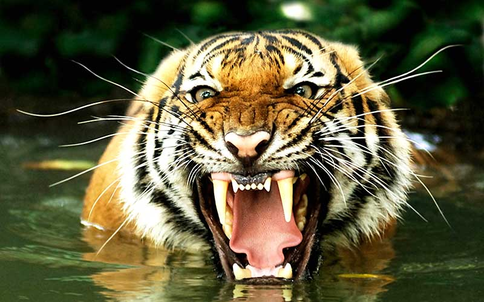

| SOCIALISACION |
Como todos los tigres, los de Bengala son animales solitarios y generalmente no viven en grupos, a excepción de las hembras, que viajan con sus crías en grupos de tres o cuatro.
Los machos cuidan un territorio donde viven varias hembras con las que se aparean. Los machos y las hembras solo se reúnen durante la época de reproducción,
si bien se han mencionado casos de machos que alimentan a sus crías cuando la madre ha fallecido.Fuente:https://es.wikipedia.org/wiki/Panthera_tigris_tigris#Ciclo_de_vida_y_estructura_social |
 |